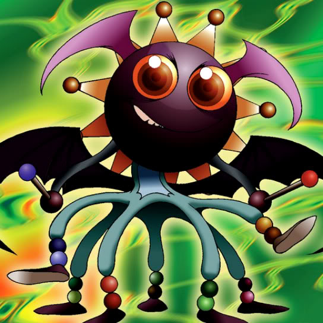

Lucky Trinket

Description: "All DARK monsters are reduced 100 points while this card remains in the face-up, defense position."
STATS
ATK: 600
DEF: 800DECK COST
Deck Cost per Card: 19EFFECT IS IMPLEMENTED!
Fusion List (7 Possible Fusions)
- Lucky Trinket + Bolt Penguin = The Immortal of Thunder
- Lucky Trinket + Flame Ghost = Magical Ghost
- Lucky Trinket + Hibikime = Musician King
- Lucky Trinket + LaLa Li-oon = The Immortal of Thunder
- Lucky Trinket + Mystic Lamp = Lord of the Lamp
- Lucky Trinket + Sonic Maid = Musician King
- Lucky Trinket + The Immortal of Thunder = Kaminari Attack